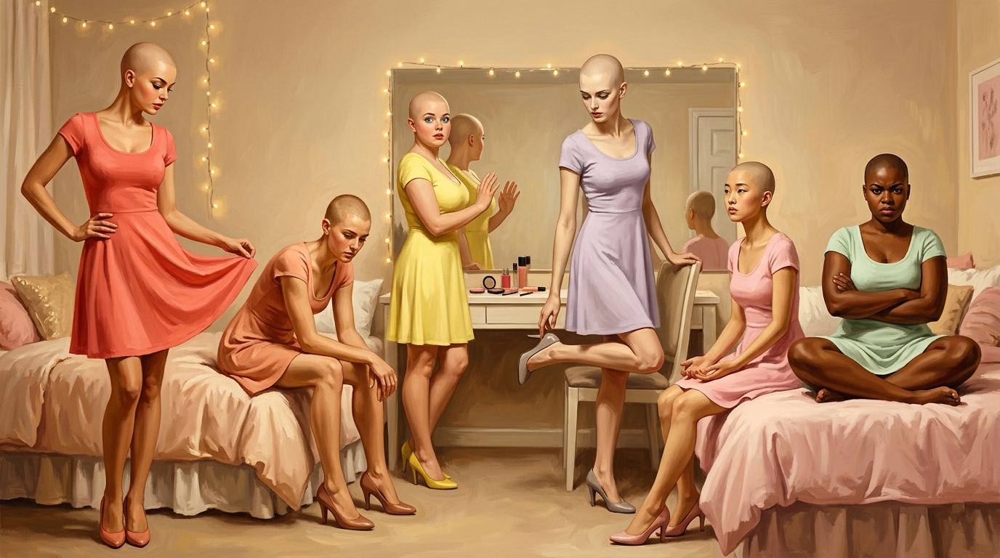
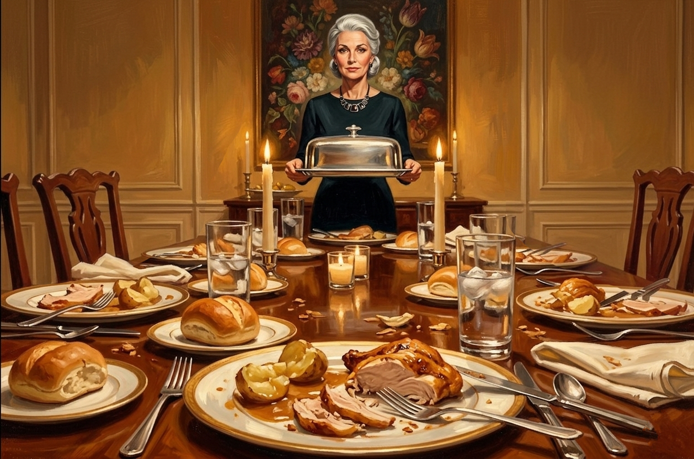

The shoes waited in their rows on the rack by the vanity, paired and patient, more of them than six people could wear out in a year. Patent pumps polished to a hard shine, strappy sandals that were barely shoes at all, tall boots in oxblood that would close over the calf with a hidden zip up the back. There were wedges and peep-toes and platforms with the toe lifted on its own thick sole so the heel behind it could climb higher still.
The styles ran the whole range. The height did not. Every pair climbed — three inches, four, the platforms higher — and every heel narrowed at the bottom to a tip no wider than a fingernail, and above each one the arch was sprung into the same high tense curve, a foot bent up off the ground and balanced on a point. There was not one flat shoe on the rack, not one a person could stand in with their heel on the floor. Forty pairs, fifty, maybe more, all silently waiting, and the only question any of them asked was how the wearer would prefer to be stood up on her toes.
Charlie couldn't have told a d'Orsay from a slingback. Didn't have the words for vamp or last or throat. Wouldn’t have known that the ones with the red soles were the expensive kind. What he had was simpler and came without any words attached: that every single shoe on that rack had been designed, and the design had a purpose, and the purpose was that wearing them should cost you something. And that shortly he was going to be made to pay it.
Porter had put the pale jeweled pair on already, the ones Cade had dropped beside him, and he stood at the shoe rack now the way Cade had stood, hands clasped loose behind his back, reading the rows, except that on Cade it had been browsing and on Porter it was triage. He took down a pair of low block heels, considered them, kept them. Took the strappy sandal, weighed it, put it back. He worked the rows with the flat efficiency of reading a supply manifest, and Charlie watched him from the bed and understood, distantly, that Porter had stopped being surprised by his own hands.
When he had what he wanted he turned and came back across the room toward the beds, and that was when Charlie saw it, the thing he wouldn't be able to stop seeing for the rest of the day.
Porter didn't wobble.
He crossed the carpet with an armload of shoes hung from his fingers by their straps, balanced on the vicious elegant spikes Cade had left him, and his ankles — the ankles that had crumpled like paper under him barefoot — took the load without comment. The pointed resting line of his feet had finally been given somewhere to point. He stood very straight and he moved very smoothly, both hands occupied and neither needed for balance, his hips swinging in the short rolling gait the boots had spent six weeks installing, and Charlie understood, watching, that the gait had never been for the boots. It had been for this. The whole long apparatus of them had been a rehearsal for hardware that hadn't arrived yet, and now it had arrived, and Porter moved across the staged warm bedroom like the gait had finally come home.
{kind=link}
"Well he wasn’t lying," he said. "They do make walking easier."
He set a pair down beside each bed, quietly, like room service nobody had ordered. He came to Jay's bed last and held the shoes out rather than setting them down. They were low, blunt, the most merciful pair on the whole cruel rack.
Jay shook his head and refused to take them.
"Trust me." Porter pushed the shoes an inch closer. "These are the lowest I could find. The other way is worse."
Charlie shuddered, recalling the wet crackle Porter's tendons had made when he'd tried to stand barefoot, the sound of something inside a foot that had been retrained for points refusing to lie down flat again.
"I'm not putting those on," Jay said. "I put them shoes on, that's it, innit. That's me saying yes to all of it."
"You're saying yes to standing up," Porter said. "It doesn’t mean they’ve won."
"It's the same fing."
"No — no, okay, but that's the whole thing, that's what I — you guys, listen, okay." Charlie was talking before he knew it. He could hear his voice running away up its bright incline, the words spilling out ahead of the thoughts, and it made him want to scream, except he knew exactly what the scream would sound like coming out of this mouth.
He paused, took a breath and held it and reached all the way down for something flat and low and grave, and when he started speaking again it made no difference whatsoever.
“Okay okay. Cade wins the shoes. Fine. He wins the voice, he wins the walk, he can sit us down and make us do watercolors till the sun explodes, I do not even care — because all of that, it's the outside, right? It's paint. He's just painting us. And paint sits on top, it doesn't — it can't get all the way in. So underneath it I'm still—"
He stopped. The next word was Charlie, and he heard in advance exactly how it would sound coming out of this mouth, round and bright and a girl's.
"I'm still me. In here." He pressed two fingers flat to his sternum, between the soft new weights of the breasts he was still learning not to look down at. "Where it counts. He can do the whole outside, he can make it as pretty as he wants, and it doesn't matter, because in here it's still me. None of this — none of it — actually changes who I am."
The bright voice set the words down and they hung there, terror dressed up as good news. But they landed. He watched as Jay’s jaw relaxed, and he slowly nodded and took the offered shoes from Porter.
"Fine. But that’s it. He don’t get the rest. He's took everyfing else — the face, the — " Jay’s hand moved vaguely at his own throat, at the voice coming out of it, " — all of it, yeah, fine, he's took all of it. But I'm not gonna sit here an' get dressed up pretty for him like a good girl. That's the one fing I've still got. Sayin' no to that."
Charlie smiled. "He said get dressed. So, like, counterpoint: no? He doesn't get a vote on this part. We need the shoes, fine. He does not win whether we put on a cute little outfit for him like it's — like he's picking us up at seven."
"I'm in." Peter let the blanket go loose at his shoulders and the front opened, exposing his breasts, a position rather than an accident. "He'd like us in those clothes? Ovah my dead body. He can file a request with my office."
"Ah have nothing to wear anyway," Hal said, deadly sweet. "Nothing in that closet goes with circuitry."
“Then it’s settled,” Jay said, settling deeper into his sprawl, arms behind his head, a parody of leisure with tears still drying on it. "Man can buy me a dress. Can't make me fancy it."
It wasn't victory. Charlie knew exactly how much it wasn't — Cade hadn't even bothered to stay and enforce it, the way you don't stay to watch water find its level — but it was the first decision the room had made as a room since the first days, and the air changed by a degree, and he'd take a degree.
"Okay! Okay okay good." He pushed himself up against his own headboard, blanket pooled in his lap, breasts bare and cold and not caring, and the voice kept wanting to run and he steered it instead of fighting it, the only trick he had: if she was going to fill every silence, fine, he'd pick the cargo. "So — while we're insane and have our tits out, can we maybe do, like, a status check? Because I've been lying here running one on myself for an hour and it is so much worse by yourself. Somebody go. What's broken, what works, what do you know. Group share. It'll be fun."
And, to everyone's surprise, they did. It came out in pieces, the fear and the grief and the wrongness of the new bodies, weeks of it surfacing now that someone had finally asked, and Charlie kept the questions light and quick, omigod-ing and uh-huh-ing. Somewhere in it he understood what he was doing and that it was working: the chatter was a clothesline, and one by one they were coming out and hanging things on it. Hal and the sheer in-the-way-ness of breasts that got between him and everything, even the sight of his own feet; Jay flinching every time his own arm crossed his eyeline; Peter admitting, reluctantly, that the bed was the best he'd slept in his life and he hated it; nobody able to say how long they'd been under, days or weeks or a season, the time simply gone. They went until the line was full of them and nobody was carrying theirs alone.
"Ah cain't even be angry right," Hal said, when his turn came back around. "Ah have been sittin' here tryin' to be furious and everything comes out like ah'm askin' someone to pass the cornbread."
"Did you say cawnbread?" Peter said, flat as a parking lot, and Jay lost it.
"You’re one to talk, you sound like a Depahted extra, bruv."
"— and you sound like —"
Charlie found himself joining in before he realized what was happening. "At least none of you sound like you're asking if the Brandy Melville is, like, near the food court or whatever?"
That broke them. Jay went first, a big helpless bark, and then Hal's bright tinkle on top of it, and then even Peter, the flat Boston deadpan cracking into something that shook his shoulders, all of them at once, the laughter cracking out of them like something under pressure finally let go, and it took Charlie a second, riding the warmth of it, to understand what he'd done.
They'd been careful with him. Their commentary had gone everywhere except his voice, around it, never at it, because they all knew he'd drawn the worst hand of the six and you didn't kick a man who'd landed there. He'd just told them they could. He'd handed it over himself, made the first joke at his own expense, and the relief in the room wasn't only the joke, it was the permission, the thing they'd all been holding politely still about suddenly free to move.
It was the first time in weeks any of them had laughed, really laughed, with their own ruined mouths. And from somewhere under all of it came a small breathy noise that Charlie didn't identify for a second.
Austin. Laughing. Barely — a hiccup of it, two seconds, gone — his eyes still aimed at the middle distance, his arms still around his knees. But it had come out of him, and the whole room had heard it, and nobody said anything about it, very carefully, the way you don't point at a wild animal that has come close.
The quiet that followed was easier than any quiet had been in weeks. And into it, because he couldn't not, Charlie said the thing that had been sitting under all of it.
"Okay but why like this, though?" He didn't mean it to come out small, but it did. "Like — what's it even for? Because, you guys, the money. The masks, the spheres, the — whatever a Connie costs, and that's gotta be a lot, Connies seem expensive — you don't spend all that to just hurt somebody. He could've done anything. Killed us, left us in the dark, whatever, and that'd be — that's punishment.. This isn't —" his hand turned over, taking in the warm lamps, the soft beds, the closet full of pretty things. "He doesn't want us hurt. He wants us nice. Why does he want us nice?"
"Trafficking," Hal said flatly.
"Don't," Peter said.
"Bless your heart. You want to hold hands and pretend it's not on the table? Look at us. Look at what they made. You don't make a thing this pretty and keep it in a box, sugar. Pretty's for showin'."
"It's punishment," Jay said. "Simple as. We took the mick out of his daughter and he's having his."
"Then why the designs." Porter, quiet, from the edge of his bed — he'd sat the way Connie sat, Charlie noticed, knees together, ankles aside, and Charlie was certain he hadn't noticed it — and he placed the question down like a card and waited.
"The designs. Right, okay." Charlie picked it up and ran with it. "Vane literally said it — they designed us. Down to the last detail, he goes. So — okay, punishment doesn't need a design, right? You don't blueprint a thing you're just trying to wreck. And we're not wrecked, we're — we're made. We're a product, we're getting, like, finished, which means—" and the bright voice ran ahead of him and he lost the thread.
Silence. The lamp hummed. Somewhere behind the walls, water moved in a pipe, an ordinary house sound in a room pretending to be a house.
"I don't know, it's — okay, it doesn't add up, but we'll figure it out. We just stay together, we stay us. Deal?" Charlie’s hand went back to his sternum, and five others followed, even Austin, silently, never taking his eyes off the far distance.
It felt like a win. Six hands, six voices, the room together for the first time in weeks. It felt like the first good thing that had happened to him since they'd woken up together, however many months ago. Five other people who knew, who were in it with him, who were going to be in it with him for whatever came next. The relief of not being the only one. The relief of us.
He hadn't felt anything this clean in weeks, and he turned his face toward it like a plant toward a window and let it warm him, six topless bodies in a row on the edges of six beds swearing to stay the men they'd been, and Charlie did not think about why the swearing felt so good, only that it did, and that he wanted more of it, and that he was, for the first time since waking up here, almost glad of the five of them in a way he couldn't have named.
Connie arrived an hour later, carrying a garment bag over one arm and with her reading glasses pushed up into the silver chignon and she got three steps into the room before she stopped. Her warm brown eyes went around the six of them — the six bare chests, the new bodies sitting exposed on the edges of the beds — and the warmth on her face cooled by a precise and terrible degree into something gently, deeply disappointed.
"Ladies."
One word, soft, sorrowing, and it dropped through Charlie's chest like something breaking.
"We do not sit about with our chests bare like a locker room. Goodness. I'm ashamed for you. Cover yourselves."
It hit Charlie before he understood what it was.
He had sat bare-chested all morning without one flicker of self-consciousness, joking and arguing with five other naked disasters and never once thought about his chest as something on display. And now, between one heartbeat and the next, it was the only fact he had.
Shame. A hot prickling awareness of his own chest, of the bare fact of it, the soft new weight of it sitting there in open air where she could see, where anyone could see, and his arms were already moving. He watched them do it. They came up and crossed over his breasts, forearms flat, shoulders curling inward, the universal gesture of a surprised woman, executed flawlessly by a body that had never been a woman and a mind that had never been surprised that way in its life, and only after the gesture was complete did the feeling underneath it finish arriving: covered. Better. Safe.
He looked around the room over his own crossed arms.
All of them. Jay scrambling the blanket up from his waist to his chin. Peter hunched forward over his own knees. Even Porter — Porter, who had been standing there in nothing but the jeweled heels delivering strategy like a board presentation — had turned half away from the door, one arm across his chest, and the look on his face said he knew exactly what his body had just done without him and could do nothing about it.
"That's better," Connie said, warmly, to the room of cowering girls, as if they'd all just remembered their manners on their own. "Now. Up, all of you, shoes on — yes, those, Porter chose well — and over to the dressers. We are going to get you properly dressed, and then I am going to show you your new home, and we are going to have a lovely first day."
Nobody moved for a moment.
"Unless," Connie said, pleasant as ever, "someone would rather not."
Within seconds, they were all rummaging through their dressers.
The dresser assigned to Charlie's bed — and it was assigned; there was a small brass frame on top with a card in it, blank, waiting for a name the way the whole room was waiting — had six drawers, and Connie stood at his shoulder and directed him to the top one.
"Underthings first, sweetheart."
The drawer slid out on soft runners and Charlie stood looking down into it and his mind went quiet in the bad way.
It was full. Neatly full and folded, a shallow sea of pale pinks and creams and whites with here and there a coral, a dove grey, everything small, everything soft, lace edges and little bows and smooth seamless cups nested into each other like measuring spoons. Someone had bought all of this. Someone had bought all of this for him, in his size, and his mind snagged on that, the fact of a size that had been decided for him while he was still six feet away in a concrete room believing he might someday go home.
"The pale pink set is a good first choice," Connie said. "Nothing fussy for the first day."
His hands went in. The fabric was unbelievably soft, slick-smooth, with a fine stretch to it, and he took out the things she meant: a small folded triangle of pink, and the bra.
He held it up by the straps because he didn't know how else to hold it. It hung in the air in front of him, two shallow molded cups and a narrow band and the thin straps, a piece of equipment engineered for a problem he hadn't had a day ago, and a small satin tag stood out from the band, and he turned it without meaning to and read it.
32D.
He stood there holding it and ignored the voice’s reaction — oh wow, a D cup? that’s literally iconic —and the absurdity arrived in layers, each one worse than the last. That there was a number. That the number described him, his ribcage, measured; his chest, graded and lettered like a quiz. That somewhere a manufacturing process had run, machines and patterns and quality control, an entire global industry that had hummed along his whole life on a frequency he'd never had to hear, and at some point in the last few months an order had gone into it.
He had a bra size. He had had a bra size for some time, apparently, before he'd had the chest. The number decided first, the body built to spec afterward, which was the whole story of him now, condensed onto a satin tag. Charlie Wright, 32D.
Behind him he could hear the rest of the room arriving at the same object at five other dressers, the small sounds of drawers and breaths held.
"Panties first, girls."
He stepped into them, a hand on the dresser, because balance on the kitten heels was a negotiation, every shift of weight a small diplomatic crisis between his ankles and the floor. The fabric came up his legs and stuck at his hips, the new width of them, and to get it past he had to roll them side to side, a little shimmy his body produced fluently and unasked, the motion landing a half-beat ahead of the decision to make it. He felt the seat of them fill out over his ass — and it was an ass now, pert and round — snug and light and seamless. In front the fabric lay dead flat, smooth all the way down, just the clean blank plane of him under a panel of pink.
"There," Connie said, pleased. "Better already. Now the bra. Arms through the straps first, then lean yourself forward into it."
The cups hung loose against his chest and the band hung open behind him, and he leaned forward the way she'd said, tipping at the waist, and felt it. Felt the weight of his own chest fall forward and away from him into the waiting cups, the new soft flesh of him filling the shaped fabric like it had been molded around exactly this.
His hands went back for the clasp and met it, and his fingers — the long tapered fingers with their glossy nails, the fingers that had spent weeks threading needles and folding cranes and pulling watercolor strokes Connie approved of — could not do it. Could not find the geometry of it blind. He stood there with his elbows winged out behind him, fumbling at the small of his back, the band's two ends touching and slipping and touching and failing.
"Here." Connie's hands arrived, warm and certain. "Everyone struggles the first time. You'll have it in a week and never think about it again."
The clasp caught. The band drew snug around his ribs.
And the bra engaged — that was the only word he had for it — the cups taking the weight that had been hanging soft and foreign off the front of him all morning, gathering it, lifting it a half-inch into a configuration that some engineer had decided upon, and the relief of it was physical and absolutely unwanted. He had not known the weight was tiring him. He had not allowed himself to know it. The bra knew.
The straps settled into his shoulders with two small lines of pressure that he understood, in one appalling forward flash, he would feel every day for the rest of his life, the way he'd once felt a wallet in a back pocket.
He looked down at himself. Pale pink against the warm gold skin. The lace edge. The little bow at the center, between the cups, decorative, pointless, there, sitting over his sternum like a signature on a finished work.
"There," Connie said, and stepped back to look at him, and her face opened into the warmth, the full warmth, the one the circuits had taught him to need. "Your first bra. Look at you."
The green came.
It rose up through him soft and total at her approval, exactly as it had risen for the garden page, for the watercolors, for the cranes, the warmth with no rim to it spreading out from the center of his chest — from, he understood with a lurch, more or less exactly where the little bow sat — and he stood there in his first bra being flooded with manufactured pride about it, hating the pride, feeling it anyway, unable to locate the part of himself that was supposed to be able to refuse deliveries.
The rest of dressing went quickly, because Connie kept it quick: a soft jersey dress for each of them, simple pull-over things in sherbet colors, no zips or buttons to defeat them, clearly chosen as training wheels. Charlie's was the pale yellow of lemon ice, a color the leftover voice said really works, I mean it’s a whole vibe. The fabric poured down over the new architecture of him and landed where it had been engineered to land, settling against him, skimming the waist that drew in and the hip that pushed out, the hem dropping light against the middle of his bare thighs. When he moved the skirt moved a half-beat after him, a small soft consequence attached to every step, so that he could not take even one stride without being followed by a reminder of what he was wearing and what was wearing it.
He turned, and the skirt swung, and the long mirror on the wall caught him before he could decide whether to let it. He looked because the dress made him, the swing of it pulling his eye to the glass, and there she was: a girl in lemon yellow with a bare smooth scalp and puffy eyes fresh from crying, the bow of the bra ghosting through the thin jersey, the breasts straining against the bodice, the waist drawn in, the whole silhouette female from the shoulders down and nothing of him left to argue the point.
{kind=link}

"Wonderful," Connie said, surveying the six of them, six girls in sherbet colors and low heels, bare-scalped and dressed like an Easter brunch. If the picture struck her as monstrous, nothing in her face confessed it. "Now. Come along, ladies. Let me show you your new home."
The tour took an hour, and the hour taught Charlie what walking cost now.
Not how to do it. He already knew how; they all did. The boots had seen to the feet and the circuits to the gait, and so the six of them moved off down the corridor behind Connie smoothly, hips rolling in the short trained stride, six girls who looked for all the world like they'd been wearing heels since they were fourteen.
What none of it had done was prevent any of it from hurting.
It started in the balls of his feet before they'd cleared the first hallway, where the weight went now. His toes crushed forward into the point of the shoe, the arch held in a curve it couldn't release. That was the joke of it: the only thing that let him stand at all drove his entire body weight onto two square inches behind his toes and held it there, stride after stride, the burn climbing into the arch and the calf with no flat to retreat to. The shoes had abolished the off position. There was the heel or there was worse.
And the gait stayed beautiful straight through it, that was the part Charlie couldn't get over. The trained smoothness running the show while the feet underneath it screamed, the circuits pouring him down the corridor serene and rolling and lovely while every nerve below his ankles filed its complaint to a body that wasn't listening. He couldn't even hitch a step to spare a toe.
Connie led them from the bedroom down a narrow carpeted hallway. It should have been nothing, but the carpet took something out from under Charlie a little. After weeks of grey seamed concrete underfoot, the give of carpet under his soles, the warm cream of the walls, a framed print of pressed flowers hung at eye height, a little half-moon table with a bowl on it. It was so ordinary, so exactly like the hallway of any nice house in any nice neighborhood anywhere, that for a second the concrete room behind them seemed like the dream and this the waking, and that was worse than the concrete had been. The concrete had at least looked like the prison it was. This lied with every soft surface it had.
Down the hall they found a lounge, warm and full of soft things and Charlie’s mind catalogued it without trying: a curved sofa in dusty rose, a pile of throw pillows — okay, cozy, very cozy, someone really committed to the throw pillow as a concept — a low table fanned with fashion magazines whose covers were all the same kind of smiling woman — she is having the best day of her life, good for her, no notes — a shelf of paperbacks with pastel spines and embracing couples on every one, a basket of DVD cases beside a television. Charlie's eye snagged on the spines and the cases as they passed: bright scripted titles, a man and a woman almost-kissing on each — so adorable, love that for them — the entire basket of them weddings and holidays and meet-cutes and love.
Next, an exercise room, one whole wall mirrored, a wooden barre running its length, a floor of pale smooth wood, small speakers up in the corners. A neat rack of hand weights in the corner, pink and lavender neoprene — the cutest! — the heaviest of them three pounds. A bathroom, startlingly real, ordinary in a way nothing had been ordinary in months, and which the voice had very little to say about. Six sinks in a row. Mirrors. A bank of shower stalls with frosted doors, towels in graduated pinks, a row of toilet stalls with actual doors that actually latched, not a urinal to be found.
"And here," Connie said, with the satisfaction of a hostess arriving at her centerpiece, "is the dining room."
It was set. That was the first thing, the thing that stopped all six of them in the doorway: a real table, long and wooden, laid with real placemats and real plates and water glasses with ice in them, ice, the cubes clicking softly as they melted, and down the center of it, dishes. Actual dishes. A roast chicken, carved, glistening. Potatoes in something herbed. Green beans, bread, butter in a dish shaped like a shell. The smell of it rolled out into the corridor and hit Charlie somewhere below thought, in the oldest part of the brain, the part that had been living on white paste for weeks.
Jay made a sound that was almost a moan. "Is that — that's real. That's real food."
"Solid food privileges, as of today," Connie said. "Doctor Vane has cleared you. Sit, ladies, before it goes cold."
They went at it. There was no dignity to the first five minutes and nobody pretended otherwise, six girls in pastel dresses falling on a roast chicken like a rugby team, the famine of the past weeks roaring up all at once, and even the new manners couldn't suppress it entirely, though Charlie noticed, distantly, that nobody's elbows hit the table, that everybody's napkin had found its lap, that the bites going into the new small mouths were small bites, cut neatly, the body's training laid invisibly over the body's hunger.
And then, for Charlie, somewhere around the eighth bite, it stopped.
Not dramatically. Nothing turned. The chicken was good — he could tell it was good, could read the facts of it, salt and fat and herb, the crisp of the skin — but the goodness arrived at him like information about a meal rather than a meal. His jaw was doing the work. The food went down fine. And the pleasure he had been waiting six weeks for sat somewhere just out of reach, the flavor coming through thin and his stomach was sending up word that it was finished, that it was, in fact, crowded, when he had eaten approximately as much as a flu patient.
He set his fork down. Looked at his plate, two-thirds full.
Around the table the same arithmetic was completing itself at five other places. Jay had slowed from devouring to pushing potatoes through gravy, frowning at them. Peter was sitting back with one hand flat on his stomach. Hal had stopped entirely and was staring at a green bean speared on his fork with an expression of honeyed betrayal.
"I'm full," Jay said, in disbelief. "I'm — that's not possible. I used to eat two of these chickens on me own."
"Our stomachs are smallah," Peter said quietly. "Has to be. Everything else is smallah — why not that." He looked at his hand on his stomach. "I'm full and I'm — I don't know what I am. Full's not the wuhd. Full used to feel good."
It didn't feel good. That was it exactly, and Charlie sat with his hands in his lap and made himself examine it. He was full, but underneath the fullness, untouched by it, something else sat empty. A want with no shape. It had been there all through the meal, he realized; he had carried it into the room and poured chicken onto it and the chicken had gone into the stomach and the want had received nothing at all, because the want was not in the stomach. It was somewhere else, somewhere the food couldn't reach, and it was patient, and it knew what it was for even if he was refusing to.
"You did wonderfully, all of you," Connie said, rising. "Small appetites. That's only natural now, you'll find, and nothing to fret over — you needn't ever clean your plates again. Those days are behind you." She moved along the table, collecting plates with brisk warmth, and then she paused, as if remembering a small pleasant thing.
"But I shouldn't think you've no room at all for a little something else. Girls always save room for a bit of dessert, don’t we."
She set a tray down in the middle of the table, between the flowers and the half-eaten meal, and lifted the cover off it.
{kind=link}

For a second Charlie's mind would not assemble what he was looking at.
Six of them, standing erect in a small fitted warming cradle, presented the way a nice restaurant might present six little bottles of something, gleaming faintly, and his eye took in the soft matte sheen of the material and the smooth rounded heads of them and the heavy faintly-veined lengths standing up off the tray, and his stomach turned hard even as the nameless hollow inside him leaned up off its chair toward the tray like something growing toward light.
He stared in shock at the six anatomically exact forms: penises, unmistakable, the thing not one of the six of them had between their legs anymore. The organ that had been dissolved off them a half-millimeter at a time inside the briefs, the thing Cade had stood in the staged bedroom and told them was simply gone. And here it was, cast in soft pale silicone and set in the middle of the table as dessert, Cade handing back what he'd taken, precisely because they'd want it least this way. The form of the thing they'd lost, handed across a nice table as the evening's treat, with no more ceremony than a tray of petits fours.
It was the Goo. Charlie knew it the instant he understood the shapes, knew the particular warm white of it packed inside the soft casing, caught the unmistakable smell of it reaching across the table the same as it had every day for weeks. But the pouches were gone, finished with, the pretense no longer needed.
He'd spent weeks watching this house round every cruel edge into something deniable — the brief that was just hygiene, the boots that were just remediation, the paste that was just nutrition — and he understood, looking at the tray, that the rounding was over. The shape they'd been inching toward for weeks, the shape the nozzle and the pull and the seal had all been quietly rehearsing, was simply here now, undisguised, soft and warm and unmistakable. Whatever phase this was had stopped pretending, had decided they were ready to be shown the thing without the wrapper.
It went around the table in a wave.
"No." Jay was up, the chair barking back across the floor, the big voice cracking on the single syllable. "No. No, you're — no."
Hal made a small strangled sound behind his napkin and looked away from the tray entirely, the composure gone, the green eyes shut. Austin had gone white and rigid and silent, his gaze dropped straight to his lap, his fragile breathing the only sound out of him. Peter stared the tray down with his jaw set. "Absolutely not. There's no version of this wheah I put one of those anywheah. No."
And Charlie sat in the middle of all of it, in the middle of the recoiling and the disgust pouring off every side of him, and felt the hollow inside him answer the tray.
It rose up under his revulsion, immediate and undeniable, and it knew exactly what it wanted, and what it wanted was on the tray. The nameless lack the whole meal had gone around snapped into focus all at once and pointed itself dead at the warm white packed inside those soft obscene shapes, and the wanting was not in his stomach and was not in his head. It was lower, and older now, weeks old, worn into him pouch by pouch and seal by seal and swallow by swallow, every warm green flicker of reward laid down one on top of the last until the body had learned the lesson all the way down: this is what fills you. Not the food. This.
His mouth, against everything, watered. The part of him that was disgusted and the part of him that was starving for it split clean down the middle and stood on opposite sides of a line, and the starving part did not care in the slightest what the shape was, did not care what it meant, did not care that an hour ago he had pressed two fingers to his chest and vowed in a bright girl's voice that nothing could get in. It had already gotten in. It had been getting in for weeks while he ate it and called it nourishment, and it had moved into the exact room he'd sworn was sealed — the place behind the sternum, the vow's own address — and now it sat there and leaned toward a tray of warm silicone and wanted, plainly and physically and humiliatingly wanted, and there was no part of his mind he could go to where the wanting wasn't.
He sat on his hands — almost literally, his fingers gone flat under his new rounded thighs, gripping the chair seat — and he kept the bright voice silent in his throat for once because he did not trust one single thing that might come out of it, and he did not reach for the tray. He watched the others not reach for it. He held, by his fingernails, to the line all six of them had sworn to hold not one hour ago with their hands on their chests, and it was already, he understood, sitting there with his belly full and his body straining toward warm silicone, a different and much harder thing than it had been when they'd sworn it.
"Suit yourselves," Connie said, entirely unbothered. "It's only nourishment, you know. The very same as what you've all been having these past weeks — there's nothing in it that hasn't been in you already. The shape is only for getting you used to things."
“Take them away,” Porter said. “That's not going to happen.”
Connie smiled, a small, benign, certain smile, the smile of a woman with all the time in the world and no doubt at all about how this ends. "No one is going to force you, but I expect you'll come round to it." She set the lid back on the tray. "Now, that'll be curfew. It's been a very long day, and tomorrow's longer. Let's get you all to bed."
They went, the six of them, in their row of melting sherbet colors, back down the soft carpeted hall toward the door with the painted flowers, and Charlie walked among them on the wrong arches of his feet with his belly uncomfortably full and the hollow place inside him still standing wide open and turned back over his shoulder toward the dining room and the tray and the warm white thing he had not let himself have.
The nighttime routine had clearly been decided long before any of them arrived to perform it, and Connie ran them through it like a woman who'd done it a hundred times: the dresses off and hung in the closet, soft short nightgowns on, the beds turned down. And then the vanities, where she sat them down one to a mirror and started them on the first of it — just cleansing tonight, we'll build up to the rest, there's no rushing a face — a pearl-pink bottle pressed into each pair of hands, a coin of it warmed between the fingers, the slow upward strokes she leaned in to correct, gentle, always up, gravity is not your friend.
It was unbearable in a way the day's larger horrors hadn't quite managed, because it was so small, so domestic, the exact shape of a thing that was going to happen every night for the rest of their lives, and Charlie could feel the forever in it, the routine closing over them like the lid of something.
It was at the vanities that he caught Austin again, two mirrors down. Connie had placed the bottle in his hands the way you'd hand a toy to a child you weren't sure was listening, and the hands had started on their own — the coin of cream, the slow upward strokes, the precise small circles at the temple, fluent and delicate and already perfect though no one had shown him twice — while above them the dark lovely eyes pointed at the glass and saw nothing, registered nothing, were nothing. The body keeping itself beautiful, alone, unsupervised by its tenant. Charlie looked away, and in his own mirror he caught Porter looking at exactly the same thing from the next stool, and their eyes met in the glass, and neither of them said anything.
Then Connie put out the lights and the fairy lights on the walls cast a warm dim wash just bright enough to see the shapes of the other beds by, and that was its own small softness, the last one of the day: they didn't even get the honest dark anymore. "Sleep well, my good girls," Connie said from the doorway, and the door closed behind her, and she didn't trouble to lock it. There was nowhere in the sealed warm box for any of them to go, and she knew it, and so did they.
Charlie lay in the soft dim and the soft bed and listened to the room go quiet around him, five other people breathing, none of them asleep, all of them lying in the low light pretending toward it. He had held the line. They all had. Nobody had reached for the tray and so nobody had fallen and so their pact had held, exactly as he'd said this morning, hand on his chest. They get the outside, they don't get this. He'd been right all day. He was right now.
And behind his sternum the want rose anyway, patient and shapeless, rising from the precise spot where his hand had lain that morning when he'd pressed his palm to his chest and sworn, with all of them, that there was a him in here they would never reach. He noticed it a half-second before he could stop himself noticing, and the noticing was the worst thing that had happened all day, worse than the mirror, worse than the tray, because the vow and the want lived in the one spot and he could no longer tell, lying there with the want leaning down the dark hall toward the dining room, which of them had been speaking this morning when he put his hand on his chest and said still me.
What he could not work out — what kept him awake a long time after the breathing around him had finally evened into sleep — was not whether he could hold the line tonight. He had held it tonight. It was how many nights there were going to be. And whether, on one of them, the easiest thing in the whole soft world would be to wake some morning and ask Connie, in his sweet new voice, for a little treat.